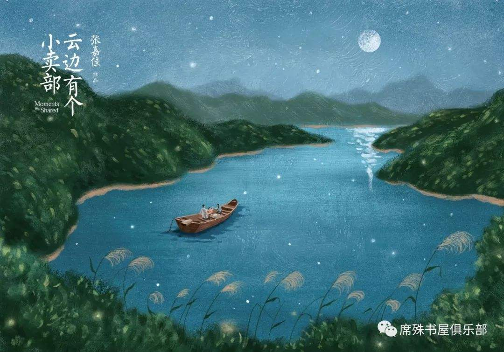
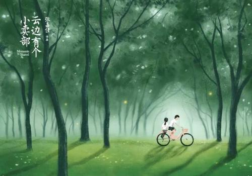
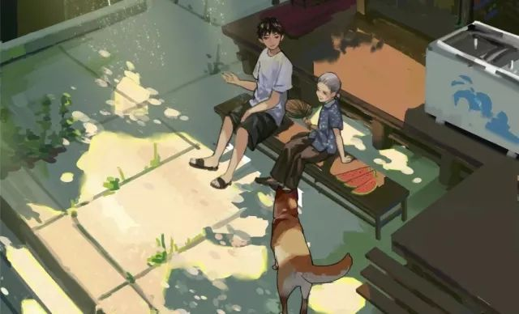
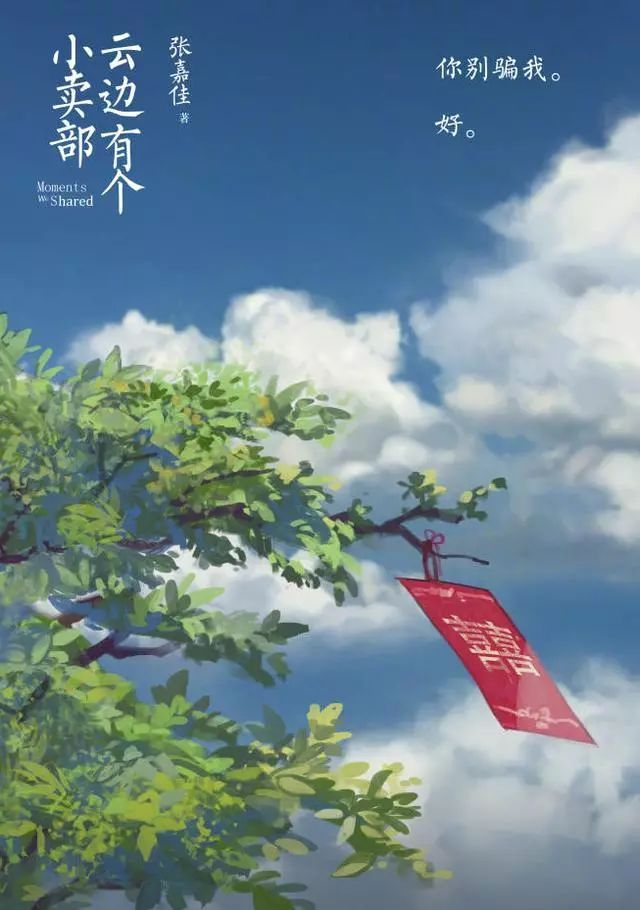
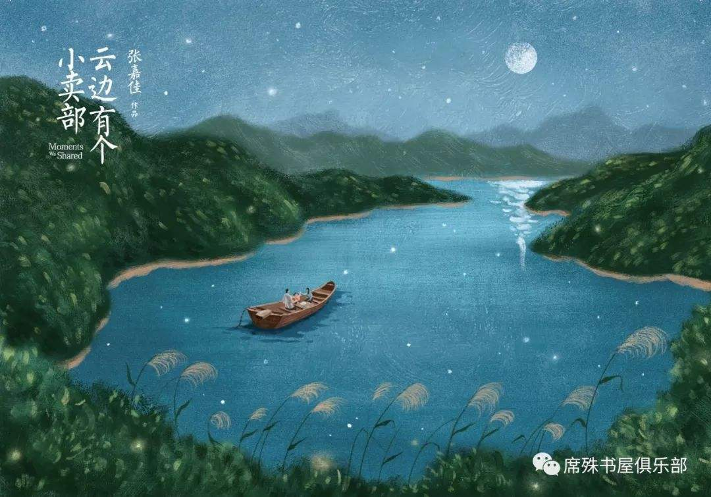
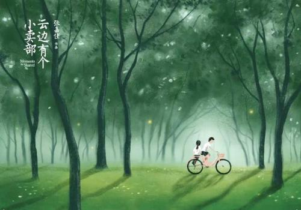
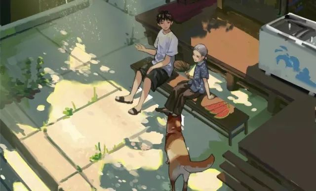
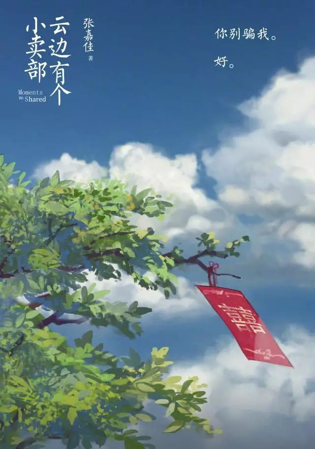

故事梗概
云边镇少年刘十三的成长故事。 刘十三自幼与开小卖部的外婆相依为命，努力读书为了离开小镇，追寻远方与梦想。在城市里碰壁受挫的刘十三回到了小镇，与少时玩伴程霜重逢。小镇生活平静却暗潮汹涌，一个孤儿，一场婚礼，一场意外，几乎打破了所有人的生活。 为了完成一个几乎不可能完成的任务，刘十三拼尽全力，却不知道，生命中更重要的正在离自己而去。
人物简介
刘十三
故事的主人公，刘十三完美地诠释了“悲伤”二字，父亲抛家弃子，母亲早早改嫁，陪伴刘十三的只有年迈的外婆，刘十三向往美好，可是无论他怎么努力，有些事他还是无法办到，就像年少时的他张口闭口清华北大，最后高考还是失利了，就像他念念不忘牡丹，最后还是追不回那朵富贵花，就像他憧憬着大把大把的钞票，最后却找不到一份像样的工作，就像无比疼爱他的外婆，最后还是不得不舍弃他而去，就像程霜，最后还是熄灭了。。。
但是“悲伤与希望，都是一缕光”，陪在刘十三身边的，还有希望。。。
程霜
“生命是有光的，
在我熄灭前能再照亮你一些，就是我所有能做的了。
我爱你，你要记得我。”
程霜从小患病，自己也不知道自己能活多久，但是四年级那年的暑假，她遇到了云边镇最有趣的人，一个成为了她生命中最亮的一道光的人，也许对程霜来说，能一直陪伴在刘十三身旁便是最美好的吧。
王莺莺
“生死是早晚的，可惜太快了”
王莺莺是刘十三的外婆，与刘十三一样命苦，骨子里透露着倔强，十分要强，年纪大的老太婆靠开小卖部养活了刘十三。同我们童年里的众多外婆一样，王莺莺非常疼爱刘十三，可惜敌不过岁月。
球球
母亲患病，父亲借出去的钱要不回来，母亲去世后父亲疯癫，身世可怜，却又聪明乖巧，机灵懂事。
优美语句
(1) 生命是有光的。
在我熄灭以前，能够照亮你一点，就是我所有能做的了。
我爱你，你要记得我。
(2) 有些人刻骨铭心，没几年会遗忘。
有些人不论生死，都陪在身旁。
(3) 夏夜的歌声，冬至的歌声，
都从水面掠过，皱起一层波纹，
像天空坠落的泪水，又归于天空。
人们随口说的一些话，跌落墙角，
风吹不走，阳光烧不掉，独自沉眠。
(4) 不知道从什么时候起，很多事情已经很多年。
(5) 十三 失散
程霜 成双
两代人终归失散，一个人心念成双。
(6) 为别人活着，也要为自己活着。
希望和悲伤，都是一缕光
总有一天，我们会再相遇。
(7) 满镇开着桔梗，蒲公英飞得比石榴树还高，一直飘进山脚的稻海。
在大多数人心中，自己的故乡后来会成为一个点，如同亘古不变的孤岛。
(8) 那么热的夏天，少年的后背被女孩的悲伤烫出一个洞，一直贯穿到心脏，
无数个季节的风穿越过这条通道，有一只萤火虫在风里飞舞，忽明忽暗。
(9) 外婆说，什么叫故乡，祖祖辈辈埋葬在这里，所以叫故乡。
(10) 程霜离开的时候，春风穿过云边镇，花瓣纷飞，好像幸福真的存在似的。
(11)山顶穿破云层，
两人仿佛站在一座孤岛上，
海浪涌动，雾气弥漫。
岛上铺满白雪，
一棵树上挂着熄灭的灯笼，
云海之间孤立无援。
(12)再习惯等待，等不来依旧难过，那种难过，书上说叫做失望。
直到长大后，他才明白，还有更大的难过，叫做绝望。
(13)原来世界上很多事情，不是你有计划，有毅力就能做到的。
(14)无论谁摊开一张信纸，写上三个字，我爱你，都或许是二十一世纪最后一封情书。
(15)梦里小镇落雨，开花，起风，挂霜，甚至扬起烤红薯的香气，每个墙角都能够听见人们的说笑声。
(16)山这边是刘十三的童年，山那边是外婆的海。
山风微微，像月光下晃动的海浪，有的，没的，温和而柔软，
停留在时光的背后，变成小时候听过的故事。
(17)有人哭，有人笑，有人输，有人老。
(18)列车不是停靠两分钟吗？为什么你告别只花了一分钟呢？
(19)刘十三的家在山间，院子开了一个小卖部，从窗户伸出手去，仿佛摸到云朵。
(20)天色暗成淡蓝，远处群山如黛，透过墨色林道，能看到镇上灯光依次亮起，炊烟熏红了晚霞。
(21)黑暗中一点一点的光，逐渐蜿蜒向上，密林中亮起一条灯笼做的小路。
(22)刘十三以后才会明白，
有些告别，就是最后一面。
(23)对方给出否定答案，他的心可以安静很久。
也许不是死心，像岛国无数座沉眠的火山，爱意与渴望缩进地幔下面，
缓缓跳动，没有死，可也不会再折腾了。
(24)树叶被风吹的轻晃，阳光破碎，蝉声隐匿，像远方的潮水。
有朵盛开的云，缓缓滑过山顶，随风飘向天边。
(25)他早就习惯等待。在这个小镇等什么，他从来不知道，只是没有等到。
(26)其实呢，对死去的人来说，每个在世上活着的最重要的人，都是他们灵魂最亮的灯笼，
他们总会放心不下，永远都在寻找，一定能回来。
(27)雨后的山林生机勃勃，一道彩虹扎根天边，世间万物都是有故乡的，
刘十三伫立在他诞生的院子，和外婆说：“感觉有人在想我们”。
(28)小二楼的阳台铺上凉席，坐着就能让目光越过桃树，望见山脉起伏，弯下去的弧线轻托起一轮月亮。
夜色浸染一片悠悠山野，哪那里不仅有森林，溪水，虫子鸣唱，飞鸟休憩，还有全镇人祖祖辈辈的坟头。
(29)从此以后，卑微刻苦，但是不想哭。
(30)想念在雾气中游荡，往事也是。全部扭曲，飘忽，呈现空旷的画面。
(31)刘十三摸过字迹，转身离开，离开老砖旧瓦，离开绿树白墙，和缓缓流淌一个小镇的少年时光。
(32)为什么天空那么高？
你看到云没有？那些都是天空的翅膀啊。
(33)雪停了，雨也停了，冬日的阳光并不温暖，平稳又均匀，但阳光里程霜的笑脸那么热烈，
她说：“我就不死，怎么样，很了不起吧？”
(34)刘十三被踢出家门，回头一望，半棵桃树高出院墙，门头上挂着破旧的小卖部招牌，背景是远处的白云青山。
(35)暮风掠过麦浪，远方山巅盖住落日，田间小道听得见蛙鸣。
喝醉的小女孩分量不轻，刘十三用力蹬车，骑成了骆驼祥子。
(36)“下一次再相见，我们就结婚吧。约好了？”
“好。”
(37)“十三，小霜，你们要好好活下去，活得漂漂亮亮。”
(38)小镇的街道狭长，十字岔路正中间有口井，偶尔来人打水，图一些凉爽。路过电影院，刘十三驻足了一会儿，
七八级浅浅的石头台阶，一面斑驳的海报墙，贴着越剧团演出的布告。
这一切唯独小镇有，它站在刘十三的童年，既不徜徉，也不漂流，包裹几代人的炊烟，走得比刘十三慢很多。
(39)生死是早晚的事，可惜太快了
(40)刘十三泪流满面，为什么做不到？为什么离笔记本上的每行字越来越远？
为什么不快乐？为什么冬至下这场雪？为什么重要的人会离开？
(41)云边有个小卖部，货架堆着岁月和夕阳，背后就是山。
老人靠着躺椅假装睡着，小孩子偷走了一块糖。
泪水几点钟落地，飞鸟要去向何方。
人们聚和离，云朵来又往。
讲故事的人，总有一个故事不愿讲。
时光飞逝，悄悄话变成纸张。
(42)人和人之间舒服的关系，是可以一直不说话，也可以随时说话。
(43)我有很重要的事，输了的话，我就真的一无所有了。
(44)七月的天色，哪怕黄昏都是清透的，脆蓝泛起火烧云，空气平滑地进入胸膛，呼吸带着天气的余味。
(45)八月底的山林清晨像一颗微凉的蒲荷塘。
青砖沿巷铺到镇尾，小道顺着陡坡上山，院子里就能望见峰顶一株乔木。
(46)刘十三一怔，牡丹？这名字陌生起来了，他呆住，以为刻骨铭心永世不忘的人，已经不再记起。